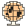
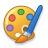
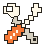
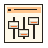

Skip to desktop projects
Creations E Professional Daydreamer
An operating system for a curious mind. Build 2026.
Small icons.
Big rabbit holes.
Double-click anything. Make yourself at home.
×
E
Designer. Creator. Serial explorer.
My Creations
The whole creative universe
About E
The human behind the pixels

The Internet
Visit the live projects

3D Playground
Just one more experiment
Selected Work
A few favorite rabbit holes
All Creations
▶
My Computer
My Experiments

My Products

Display Settings
Help and Support
Search
Show Desktop
28 ideas.
One curious mind.
✳
Pause motion
↻
Restart desktop
creations
E
Professional Daydreamer
Starting a different kind of operating system…
Creations E is an interactive portfolio. Please enable JavaScript to open the desktop and explore the projects.